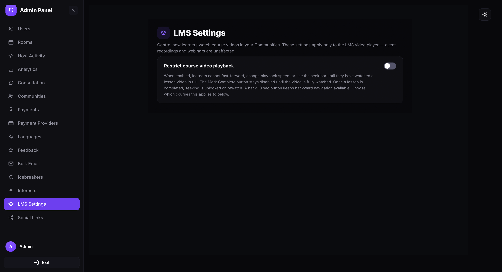
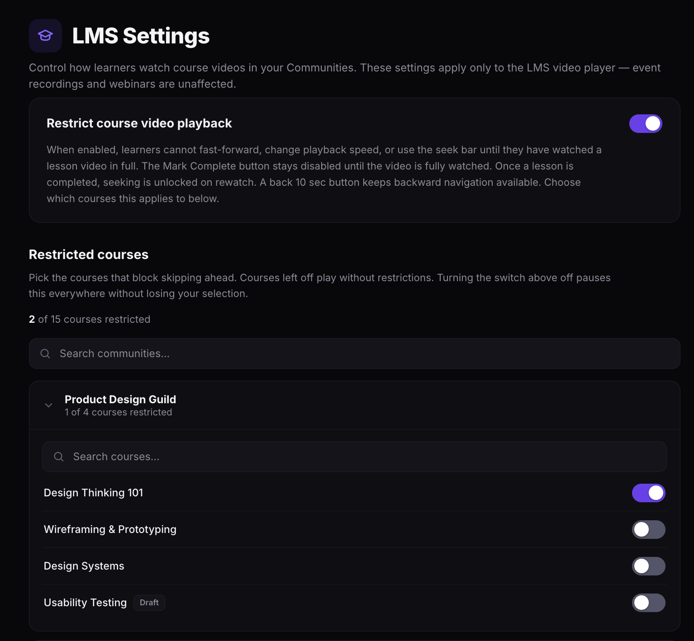

Configure LMS settings
Control how learners watch course videos in your Communities. These settings apply only to the LMS video player — event recordings and webinars are unaffected.
Open the LMS Settings page
- Open the Admin Panel.
- Click LMS Settings in the left sidebar.

Restrict course video playback
The Restrict course video playback toggle controls whether skipping restrictions are active across your Communities. When the toggle is on, learners in restricted courses cannot skip ahead in lesson videos and must watch each lesson in full before progressing.
Turn on the Restrict course video playback toggle to enable restrictions. When a course is restricted:
- Learners cannot fast-forward, change playback speed, or use the seek bar until they have watched the lesson video in full.
- The Mark Complete button stays disabled until the video is fully watched.
- Once a lesson is completed, seeking is unlocked on rewatch.
- A back 10 sec button remains available at all times for backward navigation.
Turning the toggle off pauses restrictions everywhere without losing your course selections. Turn it back on and your previously selected courses are still restricted.

Choose which courses to restrict
The Restricted courses section lets you pick exactly which courses enforce the skipping restriction. Courses left off play without restrictions.
- Scroll down to the Restricted courses section. A counter shows how many courses are currently restricted out of the total (for example, 2 of 31 courses restricted).
- Use the Search communities field to find a specific community, or browse the list.
- Click a community name to expand it and see its courses.
- Toggle individual courses on or off. Each community also shows its own counter (for example, 2 of 8 courses restricted).